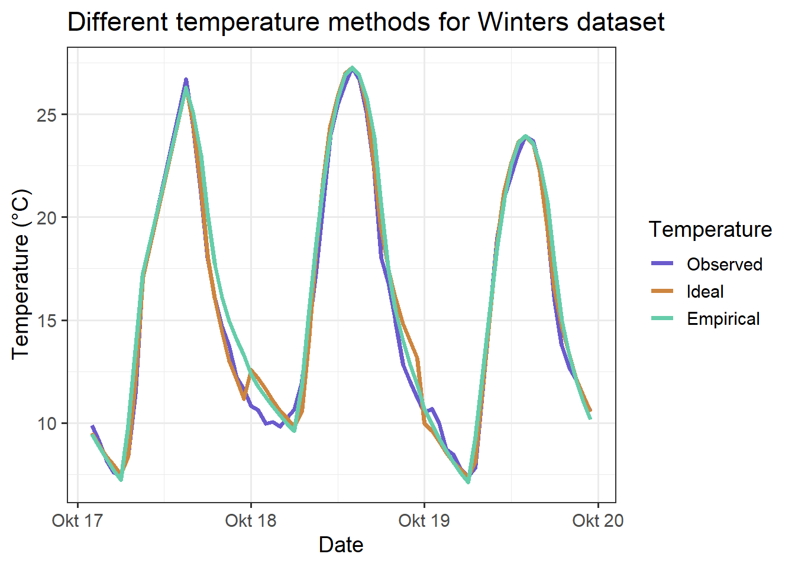

Chapter 8 Making hourly temperatures
1. Choose a location of interest, find out its latitude and produce plots of daily sunrise, sunset and daylength
The chosen location with the latitude of ‘32’ can be seen below in the leaflet. It is a farm located in the south of Morocco.
The chillR daylength function can be used to get the data for the sunsets and sunrises for a specified latitude. The melt command of the reshape2 package is used to bring the dataset in the “long” format, that is more suitable for the use with ggplot2.
require(chillR)
require(reshape2)
day_infos<-daylength(latitude=32,JDay=1:365)
days_df<-data.frame(JDay=1:365,
Sunrise=day_infos$Sunrise,
Sunset=day_infos$Sunset,
Daylength=day_infos$Daylength)
days_df<-melt(days_df, id=c("JDay"))The days_df data is plotted in 3 line graphs (geom_line) split by the factor variable.
require(ggplot2)
ggplot(days_df, aes(JDay, value)) +
geom_line(lwd=1.5) + facet_grid(cols=vars(variable)) +
ylab("Time of Day / Daylength (Hours)") +
theme_bw(base_size = 20)
2. Produce an hourly dataset, based on idealized daily curves, for the KA_weather dataset (included in chillR)
The stack_hourly_temps function is able to simulate idealized hourly data with daily minimal temperatures, daily maximal temperatures and the latitude of the place of interest.
hourly_temps_KA <- stack_hourly_temps(KA_weather, latitude=50.4)
#str(hourly_temps_KA) # to get the correct item from the list
hourly_temps_KA_df <- hourly_temps_KA$hourtemps
hourly_temps_KA_df[,"connected_timedate"] <- ISOdate(
year = hourly_temps_KA_df$Year,
month = hourly_temps_KA_df$Month,
day = hourly_temps_KA_df$Day,
hour = hourly_temps_KA_df$Hour)
ggplot(hourly_temps_KA_df[3500:3660,], aes(connected_timedate,Temp)) +
geom_line(lwd=1.5) +
labs(x="Date",
y="Temperature in C°",
title = "Hourly modelled temperature for Week 22 in 2002") +
theme_bw(base_size = 14)
3. Produce empirical temperature curve parameters for the Winters_hours_gaps dataset, and use them to predict hourly values from daily temperatures (this is very similar to the example above, but please make sure you understand what’s going on)
The Empirical_daily_temperature_curve function is used to extract hourly coefficients for each month from the Winters_hours_gaps. The make_all_day_table function is used to calculate Tmin and Tmax values, that are used in combination with the coefficients in the Empirical_hourly_temperatures to calculate the hourly temperatures.
coeffs<-Empirical_daily_temperature_curve(Winters_hours_gaps)
winters_daily<-make_all_day_table(Winters_hours_gaps, input_timestep="hour")
winters_empirical<-Empirical_hourly_temperatures(winters_daily,coeffs)| DATE | Tmin | Tmax | JDay | Hour | Temp | |
|---|---|---|---|---|---|---|
| 1 | 2008-03-03 12:00:00 | 7.92 | 19.508 | 63 | 0 | 9.976706 |
| 41 | 2008-03-03 12:00:00 | 7.92 | 19.508 | 63 | 1 | 9.716943 |
| 69 | 2008-03-03 12:00:00 | 7.92 | 19.508 | 63 | 2 | 9.409812 |
| 91 | 2008-03-03 12:00:00 | 7.92 | 19.508 | 63 | 3 | 9.247518 |
| 133 | 2008-03-03 12:00:00 | 7.92 | 19.508 | 63 | 4 | 8.726599 |
| 151 | 2008-03-03 12:00:00 | 7.92 | 19.508 | 63 | 5 | 8.313508 |
| 183 | 2008-03-03 12:00:00 | 7.92 | 19.508 | 63 | 6 | 7.920000 |
| 207 | 2008-03-03 12:00:00 | 7.92 | 19.508 | 63 | 7 | 8.282838 |
| 235 | 2008-03-03 12:00:00 | 7.92 | 19.508 | 63 | 8 | 11.537726 |
| 273 | 2008-03-03 12:00:00 | 7.92 | 19.508 | 63 | 9 | 13.659805 |
Hourly data with the Empirical and ideal method are compared with the real measured temperature. The melt function is again used to bring the dataset into the right shape.
require(reshape2)
winters_empirical<-winters_empirical[,c("Year","Month","Day","Hour","Temp")]
colnames(winters_empirical)[ncol(winters_empirical)]<-"Temp_empirical"
winters_ideal<-stack_hourly_temps(winters_daily, latitude=38.5)$hourtemps
winters_ideal<-winters_ideal[,c("Year","Month","Day","Hour","Temp")]
colnames(winters_ideal)[ncol(winters_ideal)]<-"Temp_ideal"
winters_temps<-merge(Winters_hours_gaps,winters_empirical,
by=c("Year","Month","Day","Hour"))
winters_temps<-merge(winters_temps,winters_ideal,
by=c("Year","Month","Day","Hour"))
winters_temps[,"DATE"]<-ISOdate(winters_temps$Year,
winters_temps$Month,
winters_temps$Day,
winters_temps$Hour)
winters_temps_to_plot<-winters_temps[,c("DATE",
"Temp",
"Temp_empirical",
"Temp_ideal")]
winters_temps_to_plot<-winters_temps_to_plot[200:262,]
winters_temps_to_plot<-melt(winters_temps_to_plot, id=c("DATE"))
colnames(winters_temps_to_plot)<-c("DATE","Method","Temperature")
ggplot(data=winters_temps_to_plot, aes(DATE,Temperature, colour=Method)) +
geom_line(lwd=1.3) +
ylab("Temperature (°C)") +
xlab("Date") +
ggtitle ("Different temperature methods for Winters dataset") +
scale_color_manual(labels = c("Observed", "Ideal", "Empirical"),
name="Temperature",
values = c("slateblue", "peru", "mediumaquamarine")) +
theme_bw(base_size = 14)